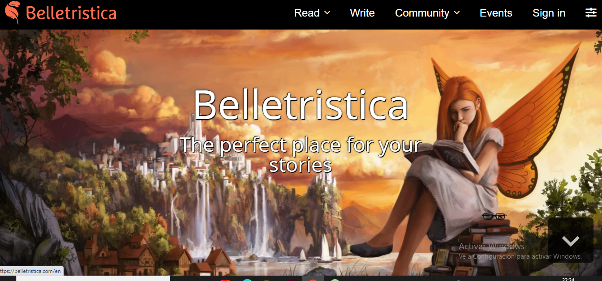

Belletristica
version 2.0.31
Funcionalitats
-Pots escriure llibres i penjarlos en aquesta app per a que altres personas ho llegeixin.
-Pots participar en chats de converses i donar suggerencies.
Captures

Finançament
Aquesta aplicació només es per a web, a Google Play no hi està disponible l'app), Els diners els aconseguixen de les subscripcions.
Companyia
Sobre la companyia esta formada per 5 persones, companyia propia
Alternatives
No existeixen altres versions d'aquesta aplicació, només aquesta mateixa.
Avantatges
-Es distintiva per la seva temática de fantasia
-Es de fácil ús
-Té grups i chats, per a coneixer altres escriptors.
-Els nivells de desboloqueig fan que sigui més entretingut.
-Té actualitzacions consecutives.
Inconvenients
-Només disponible per a ordinador.